Занятия в ультрасовременных реабилитационных центрах David при Центре укрепления позвоночника и суставов под наблюдением высококвалифицированной команды реабилитологов.
Помогает снять дискомфорт и хронические боли в пояснице, грудном и шейном отделах позвоночника.
Программа «Здоровье спины при малоподвижном образе жизни» – это комплекс занятий по финско-немецкой методике DAVID под наблюдением профессионального реабилитолога на современных медицинских тренажерах, оснащенных специальным компьютерным обеспечением.
Программу лечения в каждом конкретном случае составляет доктор во время первичной консультации.
При наличии выраженных болей врач рекоменует курс лечения для снятия воспалительного процесса и отека и, после устранения острой боли специалисты разрабатывают индивидуальную программу занятий.
Ивано-Франковск
ул.Черновола
(0342)74-45-40
Киев
м.Лукьяновка, КПИ, Осокорки, Позняки
(044)574-88-86
Львов
м.Кульпарковская
(032)254-03-46
Почему сидеть вредно?
oколо 85% людей в мире ведут малоподвижный образ жизни
Эта проблема являеться ключевой причиной различных заболеваний опорно-двигательного апарата
7,5
часов
Сидит
на работе
1,5
часа
Смотрит
телевизор
1,5
часа
Сидит
за компьютером
3
часа
Сидит, принимая
пищу
1,5
часа
Сидит
в транспорте
Когда человек садится, вся тяжесть тела ложится на позвоночник, провоцируя нарушение тонуса мышц и застой в тканях межпозвоночных дисков. Как результат – дискомфорт и болевые ощущения вдоль всего позвоночника.
Боли в пояснице
Подробнее >
Боли в грудном отделе позвоночника
Подробнее >
Боли в шее и плечах
Подробнее >
Головные боли
Подробнее >
Консультация врача и тестирование мышечного корсета
Для снятия острых состояний – лечебный курс (при необходимости)
в случае обострения хронических заболеваний и сильных болей в спине, для снятия острого состояния перед физическими нагрузками.
Rурс восстановления по методике David
Занятия на компьютеризированных медицинских тренажерах под наблюдением реаблиитолога.
Заметное снижение боли
90% пациентов отмечают значительное снижение боли и дискомфорта благодаря курсу лечения движением по финско-немецкой методике на компьютеризированных тренажерах.
Индивидуальная программа занятий
Программа занятий составляется с помощью компьютерной диагностики мышечного корсета, учитывая все основные физиологические особенности Пациента Поэтому даже у людей с одинаковым диагнозом программа лечения для каждого будет индивидуальной.
Абсолютная безопасность
В отличии от спортивных тренажеров, медицинское оборудование David позволяет работать с максимально безопасной нагрузкой и амплитудой, учитывая при этом анатомические особенности Пациента. Занятия проходят под обязательным наблюдением профессионального реабилитолога.
Максимально точное воздействие на позвоночник, суставы и мышцы
Методика DAVID позволяет точечно воздействовать только на проблемные зоны мышц и суставов. Специальные механизмы позволяют ограничить движение тех участков тела, которые не должны быть задействованы.
Ивано-Франковск
ул.Черновола
(0342)74-45-40
Киев
м.Лукьяновка, КПИ, Осокорки, Позняки
(044)574-88-86
Львов
м.Кульпарковская, КПИ, Осокорки, Позняки
(032)254-03-46
Заполните форму и мы свяжемся с вами, ответим на все вопросы или запишем на прием к доктору